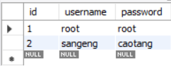
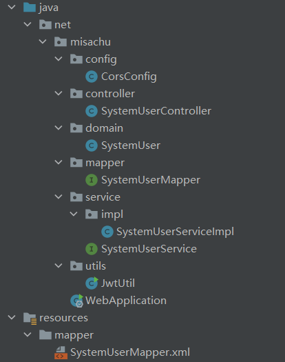

这里通过一个用户登录页面的后端接口以及前端的异步请求，实现登录功能。可以通过本文了解大致的前后端分离的项目实现结构。
登录页面分析
后端部分：
接收前端发送的登录信息(用户名+密码)，在数据库中查找是否有对应记录，如果有就返回token和应答信息(code msg)，如果没有就不返回token并返回登录失败的应答信息。这部分使用一个“Service接口+其实现类”来具体实现。
前段部分：
这个登录请求不可以通过html的原生表单实现，需要通过异步请求来完成，这里使用Vue框架的Axios实现。如果登录成功，前端会将收到的token保存，并在以后的请求中将token至于请求头中发送。如果登录不成功，前端会跳转到指定页面，告知登录失败。
请求结构如下图所示：
后端实现分析
首先分析需要哪些类或方法。
- 创建一个 SystemUserController类 ：响应前端请求，首先需要创建一个Controller类创建一个Handeler方法进行请求映射，并且将结果从响应体中返回。
对于具体的判断，通过一个 服务(service)接口及其实现类 实现。返回值部分，需要保证 响应格式统一 即使用“RequestResult”对象返回（具体参看《响应格式统一》）。 - 设计一个数据库，用于保存账号密码信息。
- 创建一个实体类 (SystemUser) 放入domain 包中：因为需要使用 Mybatis ，同时前端通过异步请求的方式发送请求。类中给出设计的数据库信息作为类的成员，这个类保存前端请求中的信息，用于后续判断。
- 创建一个接口 (SystemUserService) ：在 service 包创建，其中定义一个方法 login 传入 domain 包中 SystemUser 类的对象（此对象来自前端请求，由 Controller 类传参）。
- 创建上面接口实现类 (SystemUserServiceImpl) ：至于service.impl 包下，实现 login 方法。查询部分通过容器中的 SystemUserMapper 接口实现（Mybatis）。此类返回 SystemUser对象。此时这个对象是从数据库查询到的对象。这个对象传给 Controller类中的Handle方法 。
- 创建接口 (SystemUserMapper) ：Mybatis 用于查询数据，具体查询语句在XML里面实现（使用插件 Free MyBatiss plugin 生成即可）。
- 最后在 使用 JwtUtil 生成token，然后由Controller类中的Handle方法返回。关于JwtUtil 的使用，参见对应文章。
代码实现
SystemUserController类 ：
1
2
3
4
5
6
7
8
9
10
11
12
13
14
15
16
17
18
19
20
21
22
23
public class SystemUserController {
private SystemUserService userService;
public ResponseResult login( SystemUser user) {
//校验用户名密码是否正确
SystemUser loginUser = userService.login(user);
Map<String, Object> map;
if (loginUser != null) {
//如果正确 生成token返回
map = new HashMap<>();
String token = JwtUtil.createJWT(UUID.randomUUID().toString(), String.valueOf(loginUser.getId()), null);
map.put("token", token);
} else {
//如果不正确 给出相应的提示
return new ResponseResult(300, "用户名或密码错误，请重新登录");
}
return new ResponseResult(200, "登录成功", map);
}
}数据库

1 | DROP TABLE IF EXISTS `sys_user`; |
- 实体类 SystemUser：
1
2
3
4
5
6
7
8
9
10
public class SystemUser {
private Integer id;
private String username;
private String password;
} - Service接口 SystemUserService：
1
2
3
4
5
6
7
8
9
10
11
12
13
14
15public interface SystemUserService {
public SystemUser login(SystemUser user);
}
public class SystemUserServcieImpl implements SystemUserService {
private SystemUserMapper systemUserMapper;
public SystemUser login(SystemUser user) {
SystemUser loginUser = systemUserMapper.login(user);
return loginUser;
}
} - Service接口实现类 SystemUserServiceImpl
1
2
3
4
5
6
7
8
9
10
11
12
public class SystemUserServiceImpl implements SystemUserService {
private SystemUserMapper systemUserMapper;
public SystemUser login(SystemUser user) {
SystemUser loginUser = systemUserMapper.login(user);
return loginUser;
}
} - dao
1
2
3
4
5
6
public interface UserMapper {
List<User> findAll();
}
1 |
|
文件结构：
